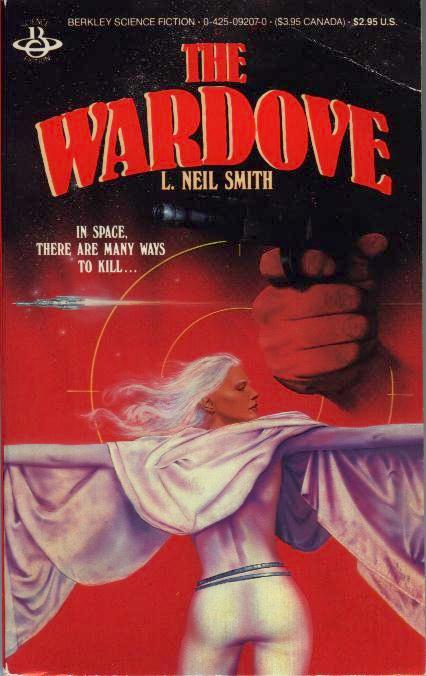

The Wardove
by L. Neil Smith
Earth was destroyed
in 2023 and only Lunar colonists survived. Nine hundred years later, in
a star-spanning "nation" without conscription or taxation, Captain
Nathaniel Blackburn of Coordinated Arm Intelligence must find out who's
killing rock musicians raising money for the War Against the Clusterian
Powers.
Includes lyrics
to a dozen songs written by the author.
New York: Berkley Books, 1986.
223 pages, mass-market paperback
Library of Congress Catalog Card Number: [not given]
ISBN 0-425-09207-0
October 1986
Cover art by Ron Miller